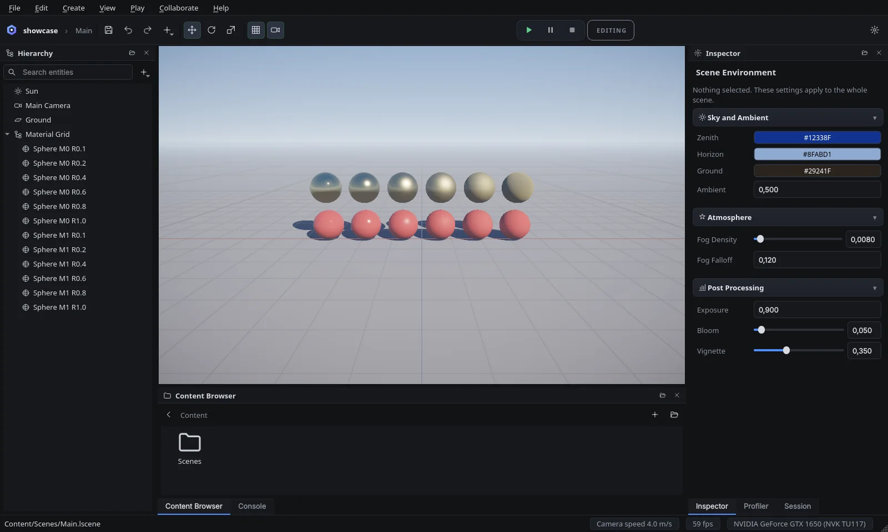
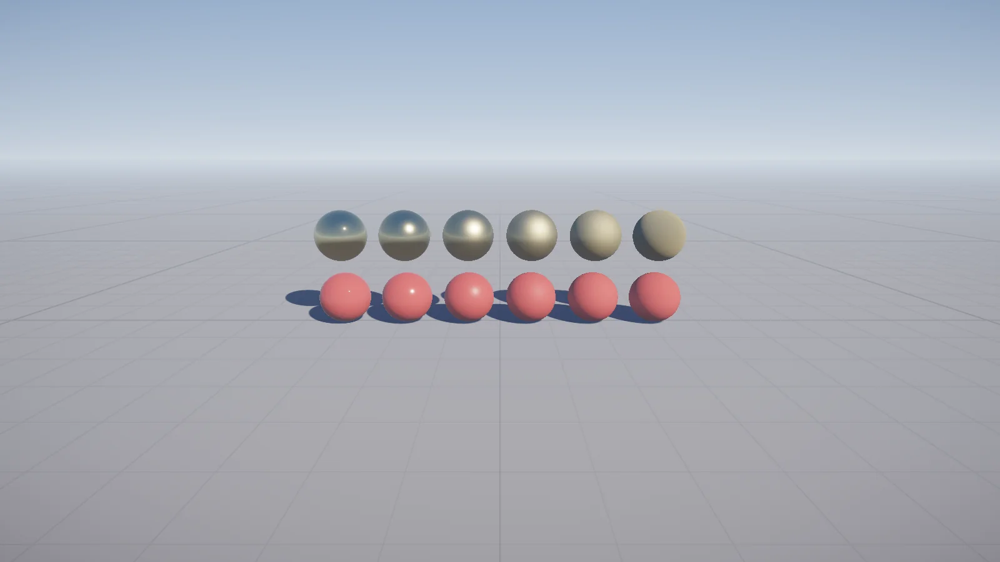
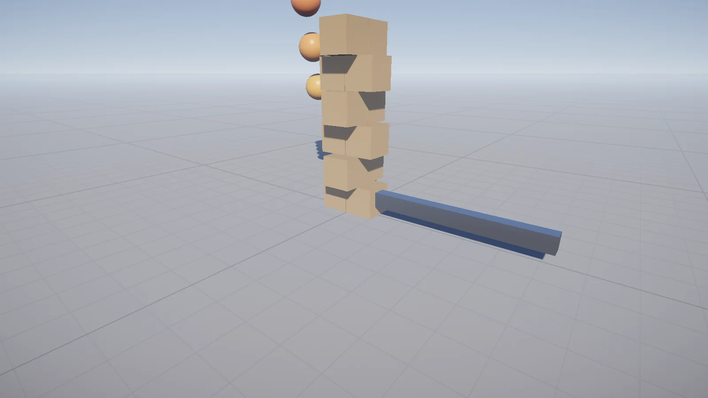
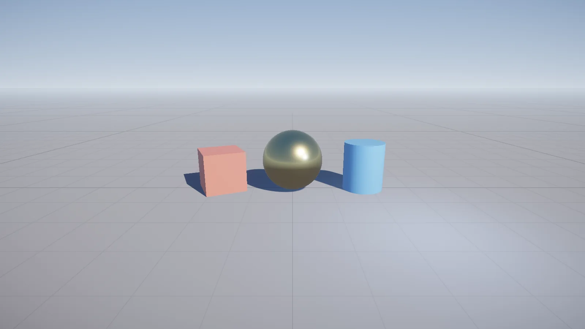

A real-time engine built on Vulkan 1.4
Lumora is a C++23 3D engine with an integrated editor: physically based rendering, rigid-body physics, live collaborative editing over your network or the internet, and a Hub that installs editor versions side by side.

What is in it
Everything listed here is implemented and covered by tests - the README separates what works today from the roadmap.
Modern renderer
Vulkan 1.4 with dynamic rendering, a render graph with automatic barriers and bindless descriptors. HDR PBR with normal maps, cascaded sun shadows with soft filtering, bloom, height fog and ACES tonemapping.
Integrated editor
Docking UI around the viewport: hierarchy, reflection-driven inspector, gizmos with snapping, undo/redo for every edit, glTF import, play mode, GPU profiler. WASD fly camera with cursor lock on Wayland.
Live collaboration
Edit one scene together on your LAN or through a playit.gg tunnel. Edits merge per field and you see each other's cameras. Imported models travel to whoever lacks them. Everything is TLS-encrypted.
Physics
Jolt Physics rigid bodies - static, kinematic and dynamic - with box, sphere and capsule colliders, stepped at a fixed rate on Jolt's worker threads. Press Play in the editor.
Hub and updates
The Hub installs editor versions side by side, opens each project in its version and offers stable, beta and alpha channels. Releases are signed, and updates download only the modules that changed.
Built to be tested
More than 170 automated tests, including GPU tests that render real frames and check pixels, Vulkan validation in CI, and UI tests that drive the editor and the Hub.
Rendered by Lumora
Straight from the engine's headless renderer (lumora-editor --headless --render),
using the project templates.



Download
Install the Hub; it downloads and updates editor versions for you. Builds for Linux are verified on every release; Windows builds are on their way.
Lumora Hub for Linux
x86-64, glibc 2.39 or newer (Ubuntu 24.04, Debian 13, Fedora 40, Arch). Needs a GPU and driver with Vulkan 1.4.
Download .zipUnzip anywhere and run bin/lumora-hub.
Windows
The release pipeline builds Windows packages; they will be offered here once they have been verified.
Release buildsBuild from source
CMake + Ninja, GCC 14 or Clang 18, Qt 6.5+, Vulkan SDK 1.4.
cmake --preset release
cmake --build --preset release